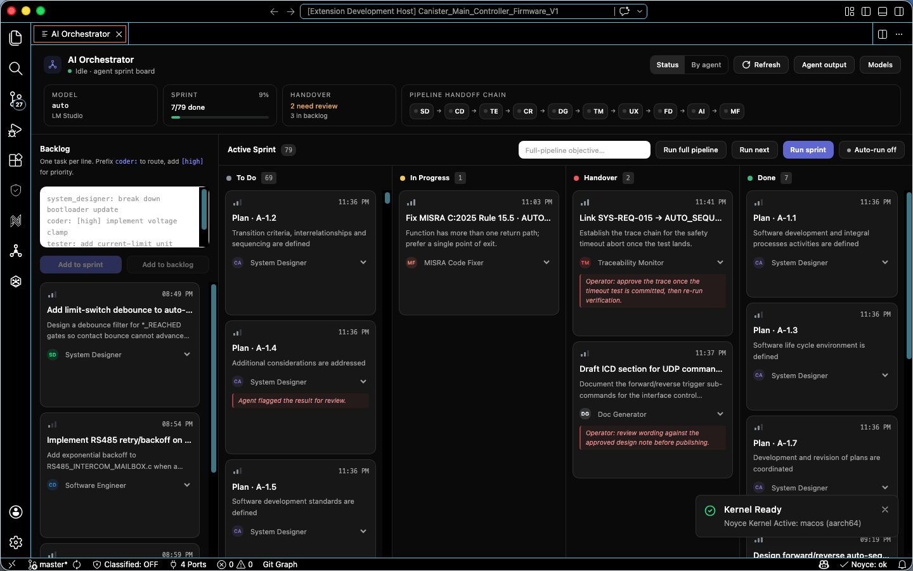
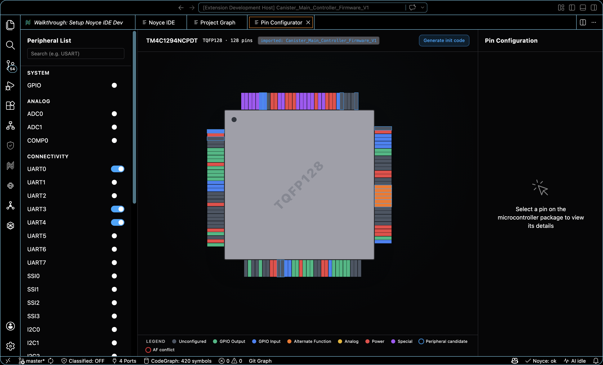
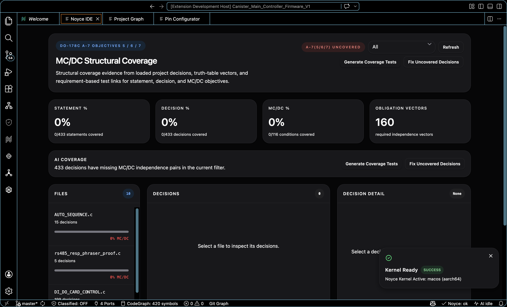
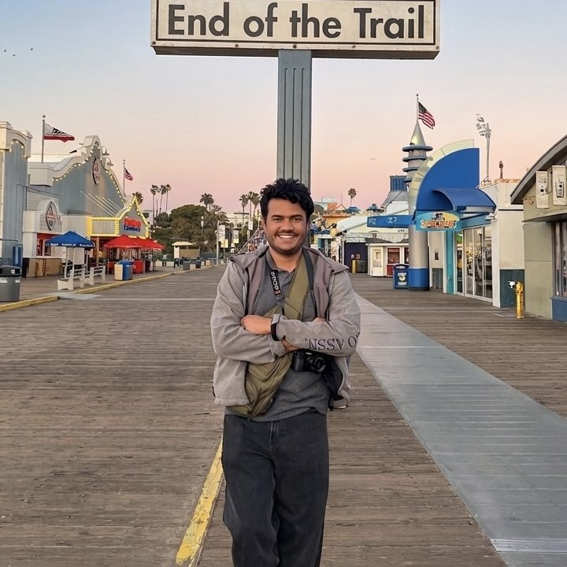

<!doctype html>
<html lang="en">
<head>
  <meta charset="UTF-8" />
  <meta name="viewport" content="width=device-width, initial-scale=1.0" />
  <meta name="theme-color" content="#07080b" />
  <meta name="description" content="Noyce IDE is an AI-native Code-OSS workbench for certifiable embedded firmware. Requirements, native editing, schematic intelligence, CBMC proofs, CodeQL scans, and a hash-chained certification package live in one window." />
  <meta property="og:type" content="website" />
  <meta property="og:title" content="Noyce IDE - AI workbench for certifiable firmware." />
  <meta property="og:description" content="A Code-OSS IDE for DO-178C, ISO 26262, and MISRA teams. Twenty-six full-pane surfaces, native editing, Register Knowledge, CBMC, and offline CodeQL." />
  <meta property="og:url" content="https://noyce-ide.vercel.app/" />
  <meta property="og:image" content="https://noyce-ide.vercel.app/icons_resources/icon_large.png" />
  <meta property="og:image:width" content="512" />
  <meta property="og:image:height" content="512" />
  <meta name="twitter:card" content="summary_large_image" />
  <meta name="twitter:image" content="https://noyce-ide.vercel.app/icons_resources/icon_large.png" />
  <link rel="canonical" href="https://noyce-ide.vercel.app/" />
  <title>Noyce IDE - AI workbench for certifiable firmware</title>

  <link rel="icon" type="image/png" sizes="512x512" href="icons_resources/icon_large.png" />
  <link rel="icon" type="image/png" sizes="32x32" href="icons_resources/icon_large.png" />
  <link rel="shortcut icon" type="image/png" href="icons_resources/icon_large.png" />
  <link rel="apple-touch-icon" sizes="180x180" href="icons_resources/icon_large.png" />

  <script src="https://unpkg.com/react@18.3.1/umd/react.development.js" integrity="sha384-hD6/rw4ppMLGNu3tX5cjIb+uRZ7UkRJ6BPkLpg4hAu/6onKUg4lLsHAs9EBPT82L" crossorigin="anonymous"></script>
  <script src="https://unpkg.com/react-dom@18.3.1/umd/react-dom.development.js" integrity="sha384-u6aeetuaXnQ38mYT8rp6sbXaQe3NL9t+IBXmnYxwkUI2Hw4bsp2Wvmx4yRQF1uAm" crossorigin="anonymous"></script>
  <script src="https://unpkg.com/@babel/standalone@7.29.0/babel.min.js" integrity="sha384-m08KidiNqLdpJqLq95G/LEi8Qvjl/xUYll3QILypMoQ65QorJ9Lvtp2RXYGBFj1y" crossorigin="anonymous"></script>
  <script src="https://cdn.tailwindcss.com"></script>
  <script src="https://unpkg.com/lucide@latest"></script>
  <style>
    @import url('https://fonts.googleapis.com/css2?family=Instrument+Serif:ital@0;1&display=swap');
    :root {
      --bg: #07080b;
      --ink: #f3f5f7;
      --muted: rgba(243,245,247,0.7);
      --line: rgba(255,255,255,0.12);
      --accent: #9ad4ee;
    }
    html { scroll-behavior: smooth; color-scheme: dark; }
    /* fixed navbar overlaps anchor targets without this */
    section[id] { scroll-margin-top: 5rem; }
    .skip {
      position: absolute;
      left: -999px;
      top: 0;
    }
    .skip:focus {
      left: 12px;
      top: 12px;
      z-index: 60;
      background: #fff;
      color: #000;
      padding: 0.5rem 0.75rem;
      border-radius: 6px;
      font-size: 0.875rem;
    }
    .fill-bg { background: var(--bg); }
    body { background-color: var(--bg); color: var(--ink); margin: 0; font-family: ui-sans-serif, system-ui, sans-serif; }
    ::selection { background: rgba(154,212,238,0.28); color: #fff; }
    a:focus-visible, button:focus-visible {
      outline: 2px solid var(--accent);
      outline-offset: 3px;
    }
    .btn { transition: background-color 0.2s cubic-bezier(.16,1,.3,1), color 0.2s cubic-bezier(.16,1,.3,1), transform 0.15s cubic-bezier(.16,1,.3,1); }
    .btn:active { transform: scale(0.97); }
    .font-instrument { font-family: 'Instrument Serif', serif; letter-spacing: -0.03em; }
    .mono { font-family: ui-monospace, 'SF Mono', Menlo, monospace; }

    .liquid-glass {
      background: rgba(255, 255, 255, 0.01);
      background-blend-mode: luminosity;
      backdrop-filter: blur(4px);
      -webkit-backdrop-filter: blur(4px);
      border: none;
      box-shadow: inset 0 1px 1px rgba(255, 255, 255, 0.1);
      position: relative;
      overflow: hidden;
    }
    .liquid-glass::before {
      content: '';
      position: absolute;
      inset: 0;
      border-radius: inherit;
      padding: 1.4px;
      background: linear-gradient(180deg, rgba(255,255,255,0.45) 0%, rgba(255,255,255,0.15) 20%, rgba(255,255,255,0) 40%, rgba(255,255,255,0) 60%, rgba(255,255,255,0.15) 80%, rgba(255,255,255,0.45) 100%);
      -webkit-mask: linear-gradient(#fff 0 0) content-box, linear-gradient(#fff 0 0);
      -webkit-mask-composite: xor;
      mask-composite: exclude;
      pointer-events: none;
    }
    .caret { display:inline-block; width:8px; height:1em; background:var(--accent); margin-left:2px; vertical-align:-2px; animation: blink 1s steps(1) infinite; }
    @keyframes blink { 50% { opacity: 0; } }

    .site-nav {
      position: fixed;
      top: 0;
      left: 0;
      right: 0;
      z-index: 50;
      padding: 0.85rem 1.5rem;
      transition: background 0.25s cubic-bezier(.16,1,.3,1), border-color 0.25s cubic-bezier(.16,1,.3,1), backdrop-filter 0.25s cubic-bezier(.16,1,.3,1);
    }
    .site-nav.is-solid {
      background: rgba(7,8,11,0.78);
      backdrop-filter: blur(16px);
      -webkit-backdrop-filter: blur(16px);
      border-bottom: 1px solid var(--line);
    }
    .nav-link { color: rgba(243,245,247,0.62); }
    .nav-link:hover, .nav-link.is-on { color: #fff; }

    .vendor-window {
      overflow: hidden;
      mask-image: linear-gradient(90deg, transparent 0%, #000 10%, #000 90%, transparent 100%);
      -webkit-mask-image: linear-gradient(90deg, transparent 0%, #000 10%, #000 90%, transparent 100%);
    }
    .vendor-track {
      display: flex;
      width: max-content;
      animation: vendor-roll 32s linear infinite;
    }
    .vendor-window:hover .vendor-track { animation-play-state: paused; }
    .vendor-cell {
      flex: 0 0 auto;
      width: 360px;
      display: flex;
      flex-direction: column;
      align-items: center;
      justify-content: center;
      gap: 10px;
      padding: 8px 20px;
    }
    .vendor-cell img { width: auto; max-width: 280px; object-fit: contain; opacity: 1; }
    h1, h2, h3 { text-wrap: balance; }
    .model-mark { height: 40px; width: auto; max-width: min(100%, 280px); object-fit: contain; object-position: left center; display: block; }
    .model-mark-gemma { height: 56px; max-width: min(100%, 460px); }
    .arch-diagram {
      border: 1px dashed rgba(154,212,238,0.32);
      border-radius: 16px;
      padding: 1.35rem 1rem 1.15rem;
      background: linear-gradient(180deg, rgba(154,212,238,0.05), transparent 40%);
    }
    .arch-lan-cap {
      font-family: ui-monospace, 'SF Mono', Menlo, monospace;
      font-size: 11px;
      letter-spacing: 0.14em;
      color: rgba(154,212,238,0.75);
      margin: 0 0 1rem;
    }
    .arch-row {
      display: grid;
      grid-template-columns: 1fr auto minmax(0,1.2fr) auto 1fr;
      gap: 0.55rem 0.7rem;
      align-items: stretch;
    }
    .arch-mid {
      display: flex;
      flex-direction: column;
      align-items: center;
      max-width: 28rem;
      margin: 0 auto;
      width: 100%;
    }
    .arch-arrow {
      display: flex;
      align-items: center;
      justify-content: center;
      color: rgba(154,212,238,0.75);
      font-size: 1.05rem;
      min-width: 1.25rem;
      user-select: none;
    }
    .arch-arrow.down {
      flex-direction: column;
      gap: 0.2rem;
      min-height: 2.6rem;
      padding: 0.35rem 0;
      font-family: ui-monospace, 'SF Mono', Menlo, monospace;
      font-size: 10px;
      letter-spacing: 0.04em;
      text-align: center;
      color: rgba(154,212,238,0.8);
    }
    .arch-node {
      width: 100%;
      text-align: left;
      border-radius: 10px;
      border: 1px solid rgba(255,255,255,0.16);
      padding: 0.85rem 1rem;
      background: rgba(7,8,11,0.85);
      color: #f3f5f7;
      cursor: pointer;
      min-height: 5.35rem;
      transition: border-color 0.2s cubic-bezier(.16,1,.3,1), background 0.2s cubic-bezier(.16,1,.3,1);
    }
    .arch-node:hover { border-color: rgba(255,255,255,0.34); }
    .arch-node.is-on {
      border-color: rgba(154,212,238,0.75);
      background: rgba(154,212,238,0.1);
    }
    .arch-node .arch-k { font-family: ui-monospace, 'SF Mono', Menlo, monospace; font-size: 10px; letter-spacing: 0.12em; color: rgba(154,212,238,0.95); margin: 0 0 0.3rem; }
    .arch-node .ttl { display: block; font-size: 0.98rem; font-weight: 600; color: #fff; margin: 0 0 0.2rem; }
    .arch-node .hn { display: block; font-size: 0.75rem; color: rgba(243,245,247,0.62); }
    @media (max-width: 767px) {
      .arch-row { grid-template-columns: 1fr; }
      .arch-row .arch-arrow { min-height: 1.5rem; transform: rotate(90deg); }
    }
    .v-head { display: flex; align-items: center; justify-content: space-between; margin-bottom: 1rem; }
    .v-row {
      display: grid;
      grid-template-columns: minmax(0,1fr) minmax(3.5rem,auto) minmax(0,1fr);
      gap: 0.55rem 0.7rem;
      align-items: stretch;
      margin-bottom: 0.55rem;
      padding-left: calc(var(--vi) * 5%);
      padding-right: calc(var(--vi) * 5%);
      transition: padding 0.3s cubic-bezier(.16,1,.3,1);
    }
    .v-link { position: relative; display: flex; align-items: center; justify-content: center; }
    .v-link::before {
      content: '';
      position: absolute; left: 0; right: 0; top: 50%;
      border-top: 1px dashed rgba(255,255,255,0.12);
    }
    .v-link.is-on::before { border-top-color: rgba(154,212,238,0.55); }
    .v-rel {
      position: relative;
      font-family: ui-monospace, 'SF Mono', Menlo, monospace;
      font-size: 9px; letter-spacing: 0.1em; text-transform: uppercase;
      color: rgba(154,212,238,0.85);
      background: var(--bg); padding: 0 0.4rem; white-space: nowrap;
    }
    .arch-node.is-pair { border-color: rgba(154,212,238,0.34); }
    .v-vertex { display: flex; flex-direction: column; align-items: center; max-width: 28rem; margin: 0 auto; width: 100%; }
    @media (max-width: 767px) {
      .v-row { grid-template-columns: 1fr; padding-left: 0 !important; padding-right: 0 !important; }
      .v-link { min-height: 1.7rem; }
      .v-link::before { display: none; }
    }
    @keyframes vendor-roll {
      from { transform: translate3d(0, 0, 0); }
      to { transform: translate3d(-50%, 0, 0); }
    }
    @media (prefers-reduced-motion: reduce) {
      html { scroll-behavior: auto; }
      .caret { animation: none; }
      .vendor-track { animation: none; }
      .vendor-window {
        mask-image: none;
        -webkit-mask-image: none;
      }
    }
  </style>
</head>
<body>
  <div id="root"></div>
  <script type="text/babel">
    const { useState, useEffect, useRef } = React;
    const EASE = 'cubic-bezier(.16,1,.3,1)';
    /* Swap for a domain address once noyce.dev mail exists. Used by Team, Contact, and Footer. */
    const CONTACT_EMAIL = 'karanth.hithesh@gmail.com';
    const REDUCE = typeof window !== 'undefined' && window.matchMedia('(prefers-reduced-motion: reduce)').matches;

    /* Inline GitHub mark — recent lucide dropped brand icons, so data-lucide="github" renders nothing */
    const GitHubIcon = ({ className }) => (
      <svg className={className} viewBox="0 0 24 24" fill="currentColor" aria-hidden="true">
        <path d="M12 .5C5.37.5 0 5.87 0 12.5c0 5.3 3.438 9.8 8.205 11.387.6.113.82-.26.82-.577 0-.285-.01-1.04-.015-2.04-3.338.724-4.042-1.61-4.042-1.61-.546-1.387-1.333-1.756-1.333-1.756-1.09-.745.083-.73.083-.73 1.205.085 1.84 1.237 1.84 1.237 1.07 1.835 2.807 1.305 3.492.998.108-.776.42-1.305.762-1.605-2.665-.303-5.467-1.332-5.467-5.93 0-1.31.468-2.38 1.235-3.22-.124-.303-.535-1.523.117-3.176 0 0 1.008-.322 3.3 1.23a11.5 11.5 0 0 1 3.003-.404c1.02.005 2.047.138 3.006.404 2.29-1.552 3.297-1.23 3.297-1.23.653 1.653.242 2.873.118 3.176.77.84 1.233 1.91 1.233 3.22 0 4.61-2.807 5.624-5.48 5.92.43.372.814 1.102.814 2.222 0 1.606-.015 2.898-.015 3.293 0 .32.216.694.825.576C20.565 22.296 24 17.797 24 12.5 24 5.87 18.627.5 12 .5Z"/>
      </svg>
    );

    /* ---------- Reveal-on-scroll (framer-motion useInView equivalent) ---------- */
    function useInView(margin) {
      const ref = useRef(null);
      const [shown, setShown] = useState(false);
      useEffect(() => {
        const el = ref.current; if (!el) return;
        if (REDUCE) { setShown(true); return; }
        const io = new IntersectionObserver(([e]) => {
          if (e.isIntersecting) { setShown(true); io.disconnect(); }
        }, { rootMargin: (margin || '-100px') + ' 0px', threshold: 0.02 });
        io.observe(el);
        return () => io.disconnect();
      }, []);
      return [ref, shown];
    }
    function Reveal({ children, y = 40, x = 0, delay = 0, dur = 0.8, className, style, as }) {
      const [ref, shown] = useInView();
      const Tag = as || 'div';
      return (
        <Tag ref={ref} className={className}
          style={{
            opacity: shown ? 1 : 0,
            transform: shown ? 'none' : `translate(${x}px, ${y}px)`,
            transition: `opacity ${dur}s ${EASE} ${delay}s, transform ${dur}s ${EASE} ${delay}s`,
            willChange: 'opacity, transform',
            ...style,
          }}>{children}</Tag>
      );
    }

    /* ---------- Hero background video (seamless crossfade loop) ---------- */
    const HeroVideo = () => {
      const videoRef = useRef(null);
      const fadeRef = useRef(null);
      const fadingOutRef = useRef(false);
      useEffect(() => {
        const video = videoRef.current; if (!video) return;
        const startFade = (target, duration, cb) => {
          if (fadeRef.current) cancelAnimationFrame(fadeRef.current);
          const start = parseFloat(video.style.opacity) || 0;
          const t0 = performance.now();
          const step = (now) => {
            const p = Math.min((now - t0) / duration, 1);
            video.style.opacity = start + (target - start) * p;
            if (p < 1) fadeRef.current = requestAnimationFrame(step); else if (cb) cb();
          };
          fadeRef.current = requestAnimationFrame(step);
        };
        const onCanPlay = () => { video.play().catch(() => {}); startFade(1, 500); };
        const onTime = () => {
          if (video.duration - video.currentTime <= 0.55 && !fadingOutRef.current) {
            fadingOutRef.current = true; startFade(0, 500);
          }
        };
        const onEnded = () => {
          video.style.opacity = '0';
          setTimeout(() => { video.currentTime = 0; video.play().catch(() => {}); fadingOutRef.current = false; startFade(1, 500); }, 100);
        };
        video.addEventListener('canplay', onCanPlay);
        video.addEventListener('timeupdate', onTime);
        video.addEventListener('ended', onEnded);
        if (video.readyState >= 3) onCanPlay();
        return () => {
          video.removeEventListener('canplay', onCanPlay);
          video.removeEventListener('timeupdate', onTime);
          video.removeEventListener('ended', onEnded);
          if (fadeRef.current) cancelAnimationFrame(fadeRef.current);
        };
      }, []);
      return (
        <div className="absolute inset-0 z-0 overflow-hidden bg-black pointer-events-none">
          <video ref={videoRef} src="web-Prototype/assets/hero.mp4?v=7" className="absolute inset-0 w-full h-full object-cover object-bottom" muted autoPlay playsInline preload="auto" style={{ opacity: 0 }} />
          <div className="absolute inset-0 bg-gradient-to-b from-black/45 via-black/20 to-black/15 pointer-events-none"></div>
        </div>
      );
    };

    /* ---------- Navbar ---------- */
    const Navbar = () => {
      const [solid, setSolid] = useState(false);
      const [here, setHere] = useState('');
      const [open, setOpen] = useState(false);
      useEffect(() => {
        const onScroll = () => setSolid(window.scrollY > 24);
        onScroll();
        window.addEventListener('scroll', onScroll, { passive: true });
        const ids = ['how', 'yc', 'features', 'models', 'proof', 'compare', 'contact'];
        const els = ids.map((id) => document.getElementById(id)).filter(Boolean);
        const io = new IntersectionObserver((entries) => {
          const vis = entries.filter((e) => e.isIntersecting).sort((a, b) => b.intersectionRatio - a.intersectionRatio)[0];
          if (vis && vis.target.id) setHere(vis.target.id);
        }, { rootMargin: '-40% 0px -50% 0px', threshold: [0, 0.2, 0.5] });
        els.forEach((el) => io.observe(el));
        return () => { window.removeEventListener('scroll', onScroll); io.disconnect(); };
      }, []);
      const NAV = [['#how', 'How it works', 'how'], ['#yc', 'Pitch', 'yc'], ['#features', 'Product', 'features'], ['#models', 'Architecture', 'models'], ['#proof', 'Proof', 'proof'], ['#compare', 'Compare', 'compare']];
      const link = (href, label, id) => (
        <a key={id} href={href} className={'nav-link text-sm transition-colors ' + (here === id ? 'is-on' : '')}>{label}</a>
      );
      return (
        <nav className={'site-nav' + (solid ? ' is-solid' : '')}>
          <div className="flex items-center justify-between max-w-6xl mx-auto">
            <a href="#top" className="flex items-center">
              
            </a>
            <div className="hidden lg:flex items-center gap-7">
              {NAV.map(([h, l, id]) => link(h, l, id))}
            </div>
            <div className="flex items-center gap-3">
              <a href="https://github.com/Hitheshkaranth/noyce-ide-dist" target="_blank" rel="noreferrer" aria-label="GitHub" className="hidden sm:flex text-white/60 hover:text-white transition-colors p-1">
                <GitHubIcon className="w-5 h-5" />
              </a>
              <a href="#download" className="btn bg-white text-black rounded-full px-4 py-1.5 text-sm font-medium hover:bg-white/90">Download</a>
              <button
                type="button"
                onClick={() => setOpen(!open)}
                aria-expanded={open}
                aria-label={open ? 'Close menu' : 'Open menu'}
                className="lg:hidden text-white/70 hover:text-white p-1"
              >
                <i data-lucide={open ? 'x' : 'menu'} className="w-5 h-5"></i>
              </button>
            </div>
          </div>
          {open && (
            <div className="lg:hidden max-w-6xl mx-auto mt-4 pb-2 flex flex-col gap-1 border-t border-white/10 pt-3">
              {NAV.concat([['#contact', 'Contact', 'contact']]).map(([h, l, id]) => (
                <a key={id} href={h} onClick={() => setOpen(false)} className="nav-link text-sm py-2">{l}</a>
              ))}
            </div>
          )}
        </nav>
      );
    };

    /* ---------- SECTION 1 · Hero ---------- */
    const Hero = () => (
      <section id="top" className="relative min-h-[100dvh] overflow-hidden flex flex-col">
        <HeroVideo />
        <div className="relative z-10 flex-1 flex flex-col items-center justify-center px-6 text-center pt-24 pb-16">
          <h1 className="font-instrument text-[clamp(3.25rem,8vw,5.75rem)] text-white leading-[0.95]">Noyce IDE</h1>
          <p className="mt-6 text-base md:text-lg text-white/80 max-w-md mx-auto font-light leading-relaxed">
            The AI-native Code-OSS workbench for firmware that has to certify.
          </p>
          <div className="flex flex-wrap items-center justify-center gap-3 mt-9">
            <a href="https://github.com/Hitheshkaranth/noyce-ide-dist/releases/tag/v2.0.3" className="btn bg-white text-black px-6 py-2.5 rounded-full font-medium text-sm hover:bg-white/90">Download for macOS</a>
            <a href="#how" className="text-white/80 hover:text-white text-sm font-medium px-3 py-2">See how it works</a>
          </div>
          <div className="mt-16 w-full max-w-5xl grid grid-cols-2 md:grid-cols-4 gap-x-8 gap-y-8">
            {[['One window', 'seven tools, one workbench'], ['70 / 70', 'CBMC proofs on live firmware'], ['SHA-256', 'evidence locked to the audit chain'], ['9 agents', 'every handoff signed']].map(([n, l]) => (
              <div key={n}>
                <div className="font-instrument text-xl md:text-2xl text-white">{n}</div>
                <div className="text-white/70 text-xs mt-1 leading-snug">{l}</div>
              </div>
            ))}
          </div>
        </div>
      </section>
    );

    /* ---------- SECTION 2 · About ---------- */
    const About = () => (
      <section className="pt-24 md:pt-32 pb-8 px-6">
        <div className="max-w-6xl mx-auto">
          <Reveal y={30} dur={0.7}>
            <h2 className="font-instrument text-3xl md:text-5xl lg:text-[3.35rem] text-white leading-[1.14] max-w-4xl">
              Firmware teams should not need a spreadsheet, a pin tool, and a chatbot
              <span className="italic text-white/70"> to prove what their code already does.</span>
            </h2>
          </Reveal>
        </div>
      </section>
    );

    const LoopVideo = ({ src, className }) => {
      const ref = useRef(null);
      useEffect(() => {
        const v = ref.current; if (!v) return;
        const play = () => { v.muted = true; v.play().catch(() => {}); };
        v.addEventListener('canplay', play);
        play();
        return () => v.removeEventListener('canplay', play);
      }, [src]);
      return <video ref={ref} src={src} className={className} muted autoPlay loop playsInline preload="auto" />;
    };

    const Featured = () => (
      <section className="pt-6 pb-20 md:pb-28 px-6">
        <div className="max-w-6xl mx-auto">
          <Reveal y={40} dur={0.8} className="rounded-2xl overflow-hidden border border-white/12 shadow-[0_0_0_1px_rgba(255,255,255,0.04)]">
            <div className="relative aspect-video bg-black">
              <LoopVideo src="web-Prototype/assets/featured.mp4?v=7" className="w-full h-full object-cover" />
            </div>
          </Reveal>
        </div>
      </section>
    );

    const VENDORS = [
      { name: 'Texas Instruments', file: 'ti-2024.svg', line: 'Tiva TM4C1294NCPDT', mark: 'h-11 md:h-14' },
      { name: 'STMicroelectronics', file: 'st-2020.svg', line: 'STM32Cube .ioc', mark: 'h-14 md:h-16' },
      { name: 'NXP', file: 'nxp-2023.svg', line: 'i.MX RT', mark: 'h-9 md:h-11' },
    ];

    const VendorRoll = () => {
      const row = REDUCE ? VENDORS : VENDORS.concat(VENDORS, VENDORS, VENDORS);
      return (
        <section className="pb-16 md:pb-20 px-6" aria-label="Silicon vendors exercised in Noyce IDE">
          <div className="max-w-6xl mx-auto">
            <p className="text-white/55 text-sm text-center mb-2">Tested on silicon</p>
            <p className="text-white/65 text-sm text-center mb-8 max-w-xl mx-auto">The live project is a Texas Instruments Tiva controller. ST and NXP boards import through the same pin, SVD, and schematic path.</p>
            <div className="vendor-window rounded-2xl border border-white/12 py-8">
              <div className="vendor-track" style={REDUCE ? { animation: 'none', width: '100%', justifyContent: 'center' } : undefined}>
                {row.map((v, i) => (
                  <div className="vendor-cell" key={v.name + '-' + i}>
                    
                    <span className="text-[11px] text-white/45">{v.line}</span>
                  </div>
                ))}
              </div>
            </div>
          </div>
        </section>
      );
    };

    /* ---------- SECTION 4 · Features (Noyce Core) ---------- */
    const Features = () => {
      const features = [
        { title: 'Certification package', desc: 'DO-178C Table A, MISRA, MC/DC, reviews, and the hash-chained ledger assemble into signed HTML + JSON. SHA-256 is the audit-trail head.' },
        { title: 'CBMC and CodeQL', desc: 'Real bounded model checking and an offline CodeQL CLI. Empty scans stay empty. Counterexamples and SARIF data-flow are in-pane.' },
        { title: 'Knowledge graph RAG', desc: 'A local embedding pipeline inside the IDE graphs code, requirements, and the vendor manual together. Register Knowledge links each register back to the source that touches it, so you can walk from firmware to the datasheet entry without leaving the editor.' },
        { title: 'Schematic to BoM', desc: 'LiteParse + PaddleOCR on the board PDF. 1,674 text items become 222 class-grouped parts and an inferred net graph.' },
      ];
      return (
        <section id="features" className="py-20 md:py-24 px-6">
          <div className="max-w-6xl mx-auto">
            <Reveal y={24} dur={0.6} className="mb-12 max-w-2xl">
              <h2 className="font-instrument text-3xl md:text-5xl text-white tracking-tight">Source, evidence, and silicon in one workspace.</h2>
              <p className="text-white/65 text-sm mt-4">26 surfaces. Artifacts stay in <span className="mono text-white/70">.noyce/</span>. The firmware tree stays git-clean.</p>
            </Reveal>
            <div className="grid grid-cols-1 md:grid-cols-2 gap-x-16 gap-y-10">
              {features.map((f) => (
                <Reveal key={f.title} y={20} dur={0.55}>
                  <h3 className="text-white font-medium mb-2">{f.title}</h3>
                  <p className="text-white/55 text-sm leading-relaxed">{f.desc}</p>
                </Reveal>
              ))}
            </div>
          </div>
        </section>
      );
    };

    /* ---------- SECTION 3B · YC Snapshot ---------- */
    const YCSnapshot = () => {
      const points = [
        { label: 'Problem', body: 'Certifiable firmware is still built across a vendor IDE, a pin tool, two static analyzers, a requirements manager, a traceability spreadsheet, a CI dashboard, and a generic AI chat. Every hop drops context the auditor later asks for.' },
        { label: 'Solution', body: 'One Code-OSS window: 26 full-pane surfaces, native editing, an in-IDE knowledge graph RAG pipeline that traces code to registers, schematic BoM, CBMC, offline CodeQL, MISRA, MC/DC, coupling, and a SHA-256-anchored certification package written under .noyce/ so the project stays git-clean.' },
        { label: 'Customer', body: 'Aerospace, automotive, medical, industrial, robotics, and defense firmware teams that must produce DO-178C / ISO 26262 / MISRA evidence before they can ship or raise the next round of hardware.' },
        { label: 'Why now', body: 'Models can finally read a workspace, but regulated teams cannot put an unaudited cloud chatbot in the loop. Noyce runs the full agent and RAG stack on a local model: Gemma 4 26B today, Qwen 3.6 27B as a supported swap. Every AI action is signed onto the same graph as the code.' },
        { label: 'Wedge', body: 'Start as the IDE they already know (Code-OSS), not a new portal. Expand from editor-native compliance into the operating system for safety-critical software delivery: evidence, hardware, CI, and agents on one thread.' },
        { label: 'Moat', body: 'Real CLIs and parsers, not screenshots of them. CBMC, CodeQL, LiteParse, PaddleOCR, CMSIS-SVD, STM32 .ioc / CCS / MPLAB importers, a 755-tool catalog, and a hash-chained ledger. That stack is hard to fake and harder to leave.' },
      ];
      return (
        <section id="yc" className="py-20 md:py-24 px-6 border-t border-white/10">
          <div className="max-w-6xl mx-auto">
            <Reveal y={30} dur={0.7} className="mb-10 max-w-2xl">
              <h2 className="font-instrument text-3xl md:text-5xl text-white tracking-tight mb-4">A platform for regulated firmware teams.</h2>
              <p className="text-white/55 text-sm md:text-base leading-relaxed">
                Make embedded engineers faster without breaking certification discipline. Diligence can run the installer, open a Tiva or STM32 project, and see CBMC, CodeQL, and the audit trail report what they measured.
              </p>
            </Reveal>
            <div className="grid grid-cols-1 sm:grid-cols-2 lg:grid-cols-3 gap-px bg-white/10">
              {points.map((p) => (
                <div key={p.label} className="fill-bg p-6 md:p-7">
                  <div className="mono text-[11px] text-sky-300/80 uppercase tracking-wider mb-3">{p.label}</div>
                  <p className="text-white/70 text-sm leading-relaxed">{p.body}</p>
                </div>
              ))}
            </div>
          </div>
        </section>
      );
    };

    const Stack = () => {
      const layers = [
        { k: 'Shell', v: 'Pinned Code-OSS + Electron. product.json overlay, rebrand patch, 11 first-party VS Code extensions (core-ui, stm32, fpga, telemetry, compliance, hardware, lifecycle, project-graph, architecture, agents, chat).' },
        { k: 'Workbench', v: 'React 18 + TypeScript 5.6 + Vite 5 + Tailwind. Density-responsive surfaces. Native editor for code; Milkdown for Markdown; schematic viewer for PDFs. Knowledge graph RAG (nomic embeddings) over source, requirements, and datasheet registers. Open from findings uses vscode.open at the line.' },
        { k: 'Sidecar', v: 'Rust (tokio, serialport, probe-rs, walkdir) over JSON-RPC stdio. Workspace IO, .ioc / CCS / MPLAB / Tiva importers, MISRA scanners, CBMC dispatch, serial and JTAG enumeration.' },
        { k: 'Isolation', v: 'All generated evidence, docs, CodeQL scratch, and schematic analysis land in <project>/.noyce/ with its own gitignore. The firmware tree is never rewritten. Host-side LiteParse + PaddleOCR and CodeQL run through the extension host and clean up.' },
      ];
      const loop = [
        { t: 'Import', d: 'Open STM32CubeIDE .ioc, TI TivaWare / Code Composer, MPLAB X, or a generic folder. Pin maps, SVD, and the MCU identity come from the project files, not a form.' },
        { t: 'Index', d: 'In-IDE knowledge graph RAG over code, requirements, and the vendor manual. Register Knowledge links the register graph to source. Semantic search and agents share that index, so a load or store traces to the datasheet register it touches.' },
        { t: 'Prove', d: 'CBMC on the harness. CodeQL security-extended from vendored packs (offline). MC/DC and data/control coupling from the AST and call graph. MISRA via cppcheck, clang-tidy, and the 755-tool catalog.' },
        { t: 'Package', d: 'Specialist agents fill DO-178C Table A artifacts. The Certification Evidence Package is signed HTML + JSON whose SHA-256 is anchored to the hash-chained audit head.' },
      ];
      return (
        <section id="stack" className="py-20 md:py-24 px-6">
          <div className="max-w-6xl mx-auto">
            <Reveal y={30} dur={0.7} className="mb-10 max-w-2xl">
              <h2 className="font-instrument text-3xl md:text-5xl text-white tracking-tight mb-3">What it is, mechanically.</h2>
              <p className="text-white/65 text-sm max-w-2xl leading-relaxed">A single Electron process tree. Noyce-owned config stays out of the vendored Code-OSS checkout (scripts/lib/codeoss-pin.json pins upstream commit and Node). That is how the product stays reproducible without forking VS Code into sludge.</p>
            </Reveal>
            <div className="grid grid-cols-1 lg:grid-cols-2 gap-10 lg:gap-16 mb-14">
              <div className="flex flex-col gap-8">
                {layers.map((row) => (
                  <Reveal key={row.k} y={24} dur={0.6} className="grid grid-cols-[7rem_1fr] gap-4 items-start">
                    <div className="mono text-[11px] text-sky-300/80 uppercase tracking-wider pt-1">{row.k}</div>
                    <p className="text-white/65 text-sm leading-relaxed">{row.v}</p>
                  </Reveal>
                ))}
              </div>
              <Reveal y={30} dur={0.8} className="border border-white/10 rounded-xl p-6 md:p-8 mono text-[12px] leading-7 text-white/70">
                <div className="text-white/30 mb-3">noyce-ide/</div>
                <div>Code-OSS desktop shell</div>
                <div className="pl-4 text-white/65">product.json overlay + 11 extensions</div>
                <div className="mt-3">React workbench (src/)</div>
                <div className="pl-4 text-white/65">compliance · hardware · RAG graph · AI</div>
                <div className="mt-3">services/noyce-core (Rust)</div>
                <div className="pl-4 text-white/65">JSON-RPC · import · scan · CBMC · serial</div>
                <div className="mt-3">.noyce/ working dir</div>
                <div className="pl-4 text-white/65">evidence · audit · CodeQL scratch</div>
              </Reveal>
            </div>
            <div className="grid grid-cols-1 md:grid-cols-2 gap-x-12 gap-y-10">
              {loop.map((s) => (
                <Reveal key={s.t} y={24} dur={0.6}>
                  <h3 className="text-white font-semibold text-lg mb-2">{s.t}</h3>
                  <p className="text-white/60 text-sm leading-relaxed">{s.d}</p>
                </Reveal>
              ))}
            </div>
          </div>
        </section>
      );
    };

    /* ---------- SECTION 5 · AI Agents ---------- */
    const AGENTS = [
      { name: 'System Designer', role: 'SRS / SDD', ico: 'compass', body: 'Drafts Software Design Descriptions and hardware dependencies (ADC, GPIO, timer, interrupt). Handoff goes to Coder and Traceability Monitor. Compliance routes A-3/A-4 SRS and SDD objectives here.', cmd: 'noyce decompose REQ-014 --target tm4c1294' },
      { name: 'Coder', role: 'implement', ico: 'code', body: 'Implements from the SDD in MISRA C:2025, adds @req / @design / @verification annotations, and refactors for MISRA. Handoff to Tester and Reviewer. Compliance A-5 source-conformance uses this persona as Embedded C Engineer.', cmd: 'noyce impl LLR-072 --hal tiva --misra' },
      { name: 'Tester', role: 'Unity · HIL', ico: 'flask-conical', body: 'Generates Unity tests (nominal, boundary, negative, timing) and module test plans. Handoff to Reviewer. Compliance A-6 test-case objectives land here. MC/DC stays at 0% until those links exist.', cmd: 'noyce verify TST-204 --mcdc --hil' },
      { name: 'Reviewer', role: 'MISRA · A-7', ico: 'search-check', body: 'MISRA C:2025 audit with severity, rule, file:line, and a fix. Safety review against DO-178C with PASS / PASS WITH ADVISORIES / FAIL. Routed as Compliance Reviewer for A-7 review records. Handoff to Coder or Doc Generator.', cmd: 'noyce review --rule 15.5 --explain' },
      { name: 'Doc Generator', role: 'plans · records', ico: 'file-text', body: 'Extracts SRS entries and bidirectional trace links. Compliance routes A-1 plans, A-2 standards, and A-8/A-9/A-10 QA/CM records here as Documentation Engineer, as print-ready markdown and .docx.', cmd: 'noyce doc SDP --section 4.2 --sign' },
      { name: 'Traceability Monitor', role: 'graph · orphans', ico: 'git-fork', body: 'Emits new_nodes / new_edges JSON to keep the graph current. Lists orphans: requirements without code, code without tests, design without requirements. Completions append to the hash-chained audit ledger.', cmd: 'noyce trace --audit --fail-on-orphan' },
      { name: 'UI/UX Designer', role: 'spec · critique', ico: 'palette', body: 'Turns a user story into information hierarchy, flow, and component spec. Critiques a screenshot or current UI against the workbench aesthetic. Handoff to Frontend Developer.', cmd: 'noyce design --story onboard-pin-mux' },
      { name: 'Frontend Developer', role: 'React · TS', ico: 'panel-top', body: 'Implements the React + TypeScript component from the design spec, or refactors to hooks. Handoff to API Integrator and Tester. Used when Noyce surfaces themselves are the work.', cmd: 'noyce ui impl --spec pin-card' },
      { name: 'API Integrator', role: 'REST · types', ico: 'cloud', body: 'Defines REST endpoints and data structures for the attached frontend, then wires fetch with error handling and types. Handoff to Frontend Developer and Tester.', cmd: 'noyce api wire --surface serial-monitor' },
    ];
    const Agents = () => {
      const [active, setActive] = useState(0);
      const [typed, setTyped] = useState('');
      const a = AGENTS[active];
      useEffect(() => {
        setTyped(''); if (REDUCE) { setTyped(a.cmd); return; }
        let i = 0; const id = setInterval(() => { i++; setTyped(a.cmd.slice(0, i)); if (i >= a.cmd.length) clearInterval(id); }, 26);
        return () => clearInterval(id);
      }, [active]);
      useEffect(() => { if (window.lucide) window.lucide.createIcons(); }, [active]);
      return (
        <section id="ai" className="py-20 md:py-24 px-6 border-t border-white/10">
          <div className="max-w-6xl mx-auto">
            <Reveal y={24} dur={0.6} className="mb-10 max-w-2xl">
              <h2 className="font-instrument text-3xl md:text-5xl text-white tracking-tight">Nine specialist agents, one auditable thread.</h2>
              <p className="text-white/65 text-sm mt-3">Nine personas, each with its own local model. Firmware loop plus workbench UI. Completions are hash-chained.</p>
            </Reveal>
            <div className="flex flex-wrap gap-x-5 gap-y-2 mb-8">
              {AGENTS.map((ag, i) => (
                <button type="button" key={ag.name} onClick={() => setActive(i)} onMouseEnter={() => setActive(i)}
                  aria-pressed={active === i}
                  className={'text-sm py-1 border-b transition-colors ' + (active === i ? 'text-white border-white' : 'text-white/45 border-transparent hover:text-white/75')}>
                  {ag.name}
                </button>
              ))}
            </div>
            <div className="max-w-2xl border-t border-white/10 pt-6">
              <div className="text-xs text-white/40 mb-2">{a.role}</div>
              <h3 className="text-xl text-white font-medium mb-3">{a.name}</h3>
              <p className="text-white/60 text-sm leading-relaxed mb-5">{a.body}</p>
              <div className="mono text-xs text-white/65"><span className="text-white/30">$ </span>{typed}<span className="caret"></span></div>
            </div>
            <Reveal y={30} dur={0.7} className="mt-12">
              <div className="rounded-xl overflow-hidden border border-white/12 bg-black/40">
                
              </div>
              <p className="text-white/40 text-xs mt-3">AI Orchestrator · the sprint board and the SD to CD to TE to CR to DG to TM handoff chain, with operator gates on review</p>
            </Reveal>
          </div>
        </section>
      );
    };

    const LocalModels = () => {
      const nodes = [
        { id: 'src', kicker: 'Source', title: 'Firmware slice', hint: '.c · @req · module', body: 'Select a function, module, or requirement-tagged region in the native Code-OSS editor. That slice is what has to certify.' },
        { id: 'ide', kicker: 'Workstation', title: 'Noyce IDE', hint: 'Electron · 9 agents · RAG', body: 'The workbench stays on the engineer machine. Agents, Register Knowledge, and the editor share one graph. Completions are hash-chained. Nothing is sent to a public cloud unless you point it there.' },
        { id: 'rag', kicker: 'Graph', title: 'Register Knowledge', hint: 'code linked to registers', body: 'The in-IDE knowledge graph RAG indexes the vendor manual with the firmware. A load or store traces to the register and bit field it touches.' },
        { id: 'model', kicker: 'Same LAN', title: 'Local model host', hint: 'Gemma 4 26B · Qwen 3.6 27B', body: 'Point Model settings at an OpenAI-compatible endpoint on localhost or 10.x. Gemma 4 26B is current. Qwen 3.6 27B is a supported swap. vLLM, llama.cpp, MLX, or Ollama.' },
        { id: 'out', kicker: 'On disk', title: '.noyce/ package', hint: 'docs · fixes · SHA-256', body: 'Specialist agents write DO-178C / MISRA artifacts for that slice, patch violations in the same window, and file signed HTML + JSON under .noyce/. The firmware tree stays git-clean.' },
      ];
      const [active, setActive] = useState('ide');
      const n = nodes.find((x) => x.id === active) || nodes[1];
      const Box = ({ id }) => {
        const k = nodes.find((q) => q.id === id);
        return (
          <button type="button" onClick={() => setActive(id)} onMouseEnter={() => setActive(id)}
            className={'arch-node' + (active === id ? ' is-on' : '')}>
            <div className="arch-k">{k.kicker.toUpperCase()}</div>
            <span className="ttl">{k.title}</span>
            <span className="hn">{k.hint}</span>
          </button>
        );
      };
      return (
        <section id="models" className="py-20 md:py-24 px-6 border-t border-white/10">
          <div className="max-w-6xl mx-auto">
            <Reveal y={24} dur={0.6} className="mb-12 max-w-2xl">
              <h2 className="font-instrument text-3xl md:text-5xl text-white tracking-tight">Noyce IDE on the organization LAN.</h2>
              <p className="text-white/70 text-sm mt-3 leading-relaxed">Hover a block. The IDE, the graph, and the model host stay inside the building. A slice of code becomes compliance documents and patches, then lands in <span className="mono text-white/80">.noyce/</span>.</p>
            </Reveal>

            <Reveal y={20} dur={0.55} className="mb-8">
              <div className="arch-diagram">
                <p className="arch-lan-cap">ORGANIZATION LAN · NO PUBLIC CLOUD REQUIRED</p>
                <div className="arch-row">
                  <Box id="src" />
                  <div className="arch-arrow" aria-hidden="true">→</div>
                  <Box id="ide" />
                  <div className="arch-arrow" aria-hidden="true">→</div>
                  <Box id="rag" />
                </div>
                <div className="arch-arrow down">↓<span>OpenAI-compat · 10.x / localhost</span></div>
                <div className="arch-mid"><Box id="model" /></div>
                <div className="arch-arrow down">↓<span>generate docs · patch violations</span></div>
                <div className="arch-mid"><Box id="out" /></div>
              </div>
            </Reveal>

            <div className="max-w-2xl border-t border-white/10 pt-6 mb-14">
              <div className="text-xs text-white/40 mb-2">{n.kicker}</div>
              <h3 className="text-xl text-white font-medium mb-3">{n.title}</h3>
              <p className="text-white/60 text-sm leading-relaxed">{n.body}</p>
            </div>

            <div className="flex flex-col sm:flex-row sm:items-end gap-8 sm:gap-16">
              {[
                { name: 'Gemma 4 26B', file: 'gemma4.png', note: 'Current', mark: 'model-mark model-mark-gemma' },
                { name: 'Qwen 3.6 27B', file: 'qwen3-lockup.png', note: 'Supported', mark: 'model-mark' },
              ].map((m) => (
                <div key={m.name} className="flex flex-col gap-3 min-w-0">
                  
                  <div className="flex items-baseline gap-3">
                    <span className="text-white/80 text-sm">{m.name}</span>
                    <span className="mono text-[11px] text-sky-300/80 uppercase tracking-wider">{m.note}</span>
                  </div>
                </div>
              ))}
            </div>
          </div>
        </section>
      );
    };

    const SplitScene = ({ src, title, flip, children }) => (
      <div className="grid grid-cols-1 md:grid-cols-2 gap-8 md:gap-12 md:items-center">
        <Reveal x={flip ? 40 : -40} y={0} dur={0.9} className={'rounded-2xl overflow-hidden aspect-[4/3] border border-white/12 ' + (flip ? 'md:order-2' : '')}>
          <LoopVideo src={src} className="w-full h-full object-cover" />
        </Reveal>
        <Reveal x={flip ? -40 : 40} y={0} dur={0.9} className={flip ? 'md:order-1' : ''}>
          <h3 className="font-instrument text-3xl md:text-4xl text-white tracking-tight mb-5">{title}</h3>
          {children}
        </Reveal>
      </div>
    );

    /* ---------- SECTION 6 · Hardware × Software (philosophy layout) ---------- */
    const Philosophy = () => (
      <section id="hardware" className="py-20 md:py-24 px-6 border-t border-white/10">
        <div className="max-w-6xl mx-auto">
          <Reveal y={40} dur={0.8}>
            <h2 className="font-instrument text-4xl md:text-6xl text-white tracking-tight mb-12">Silicon <span className="italic text-white/40">×</span> Software.</h2>
          </Reveal>
          <div className="flex flex-col gap-20 md:gap-28">
            <SplitScene src="web-Prototype/assets/philosophy.mp4?v=7" title="Pins, registers, and the schematic.">
              <p className="text-white/70 text-base md:text-lg leading-relaxed">Pin maps from STM32CubeMX <span className="mono text-white/80">.ioc</span> files, SVD registers, a Cortex-M CFSR decoder, and GNU ld memory maps. Register Knowledge indexes the vendor manual and links each register to the source that touches it, so the datasheet and the firmware stay one graph.</p>
              <div className="w-full h-px bg-white/10 my-8"></div>
              <p className="text-white/70 text-base md:text-lg leading-relaxed">The schematic viewer pans and zooms the board PDF, then Analyze builds a class-aware BoM and an inferred net graph. Importers cover STM32CubeIDE, TI Tiva / Code Composer, MPLAB X, and a generic folder.</p>
              <div className="flex flex-wrap gap-2 mt-8">
                {['STM32', 'TI Tiva / CCS', 'PIC32 / MPLAB', 'RP2040', 'i.MX RT', 'Cortex-M'].map((t) => (
                  <span key={t} className="mono text-xs text-sky-300/90 border border-sky-300/20 bg-sky-300/[0.04] rounded-full px-3 py-1">{t}</span>
                ))}
              </div>
            </SplitScene>
            <SplitScene src="web-Prototype/assets/workbench.mp4?v=1" title="Native Code-OSS editor." flip>
              <p className="text-white/70 text-base md:text-lg leading-relaxed">The editor is Code-OSS, not a webview copy. Open from MISRA or CodeQL lands on the line, with Noyce evidence layered on. <span className="mono text-white/80">@req</span> and <span className="mono text-white/80">@verification</span> stay in the source the compiler sees.</p>
              <div className="w-full h-px bg-white/10 my-8"></div>
              <p className="text-white/70 text-base md:text-lg leading-relaxed">Agents, Register Knowledge, and the native buffer share one graph. Completions are hash-chained. The firmware tree stays git-clean while drafts go under <span className="mono text-white/80">.noyce/</span>.</p>
            </SplitScene>
            <SplitScene src="web-Prototype/assets/silicon.mp4?v=1" title="On the board.">
              <p className="text-white/70 text-base md:text-lg leading-relaxed">The live project is a Texas Instruments Tiva controller. The same pin, SVD, and schematic path takes ST and NXP boards. Firmware is argued against the part on the desk, not a generic MCU in a slideshow.</p>
              <div className="w-full h-px bg-white/10 my-8"></div>
              <p className="text-white/70 text-base md:text-lg leading-relaxed">Macro of the board is the hardware half of the workbench: traces, packages, and the registers those traces drive. Software in the editor has to name the same devices.</p>
            </SplitScene>
          </div>
        </div>
      </section>
    );

    /* ---------- SECTION 6B · V-model correlation ---------- */
    const VPAIRS = [
      {
        rel: 'validated by',
        left: { id: 'req', k: 'A-3', t: 'System requirements', s: 'Requirements · Semantic Search', d: 'Requirements arrive from Jama or a generic ALM, or the System Designer agent drafts them from the system description. Each one carries a @req tag that lives in the source the compiler sees, not in a parallel spreadsheet.' },
        right: { id: 'cert', k: 'A-1 · A-8 · A-9', t: 'Certification evidence', s: 'Compliance · Audit Trail', d: 'DO-178C Table A objectives assemble into a signed HTML and JSON package under .noyce/. Its SHA-256 becomes the new head of the hash-chained audit trail, so the evidence is anchored to the run that produced it.' },
      },
      {
        rel: 'verified by',
        left: { id: 'arch', k: 'A-4', t: 'Software architecture', s: 'Architecture · Project Graph', d: 'A C4 view built from the tree: 3 subsystems, 116 relationships, 12 types. The System Designer agent writes the Software Design Description and names the hardware dependencies it assumes, ADC, GPIO, timer, interrupt.' },
        right: { id: 'sysver', k: 'A-6', t: 'System verification', s: 'Formal Verification · Code Scanning', d: 'CBMC bounded model checking over the firmware harness, 70 of 70 properties proved. CodeQL security-extended from vendored packs, offline. Cyber Assurance builds a real-source SBOM with OSV lookup.' },
      },
      {
        rel: 'verified by',
        left: { id: 'design', k: 'A-4 · A-5', t: 'Detailed design', s: 'Register Knowledge · Pin Configurator', d: 'Low-level requirements resolve down to the silicon. Register Knowledge links every register and bit field to the source that touches it, and the pin configurator carries the mux state straight out of the vendor project.' },
        right: { id: 'integ', k: 'A-7', t: 'Integration verification', s: 'Data and Control Coupling', d: '24 components, 17 control pairs, 59 data pairs measured from the call graph. Pairs with no evidence behind them are listed as uncovered rather than quietly counted as passing.' },
      },
      {
        rel: 'verified by',
        left: { id: 'unitdes', k: 'A-2 · A-5', t: 'Unit design and standard', s: 'MISRA C:2025 · Reviewer', d: 'The coding standard is enforced where the code is written. MISRA diagnostics come from cppcheck, clang-tidy, and the 755-tool catalog, and the Reviewer agent audits with severity, rule, file:line, and a fix.' },
        right: { id: 'unitver', k: 'A-6 · A-7', t: 'Unit verification', s: 'Test Explorer · MC/DC Coverage', d: 'The Tester agent generates Unity cases for nominal, boundary, negative, and timing. MC/DC structural coverage tracks 433 decisions and 116 conditions against 160 required independence vectors.' },
      },
    ];
    const VERTEX = { id: 'code', k: 'Vertex', t: 'The code itself', s: 'Native Code-OSS editor', d: 'Both arms meet in the editor. Nothing in this diagram lives in a separate portal: the requirement tag, the design link, the MISRA finding, and the test link all attach to the same line of firmware, and the Traceability Monitor lists whichever of them is missing.' };

    const VModel = () => {
      const [active, setActive] = useState('req');
      const flat = VPAIRS.flatMap((p) => [p.left, p.right]).concat([VERTEX]);
      const node = flat.find((n) => n.id === active) || flat[0];
      const partnerOf = (id) => {
        for (const p of VPAIRS) {
          if (p.left.id === id) return p.right;
          if (p.right.id === id) return p.left;
        }
        return null;
      };
      const partner = partnerOf(active);
      const rowOn = (p) => p.left.id === active || p.right.id === active;
      const VNode = ({ n }) => (
        <button type="button" onClick={() => setActive(n.id)} onMouseEnter={() => setActive(n.id)}
          className={'arch-node' + (active === n.id ? ' is-on' : '') + (partner && partner.id === n.id ? ' is-pair' : '')}>
          <div className="arch-k">{n.k}</div>
          <span className="ttl">{n.t}</span>
          <span className="hn">{n.s}</span>
        </button>
      );
      return (
        <section id="vmodel" className="py-20 md:py-24 px-6 border-t border-white/10">
          <div className="max-w-6xl mx-auto">
            <Reveal y={24} dur={0.6} className="mb-10 max-w-2xl">
              <h2 className="font-instrument text-3xl md:text-5xl text-white tracking-tight mb-4">The V model, with both arms in one window.</h2>
              <p className="text-white/65 text-sm leading-relaxed">
                Safety programs already run the V. What breaks is the horizontal: the line that says this test verifies that requirement. It normally lives in a spreadsheet nobody trusts. Hover a stage to see the surface that produces it and the stage it answers to.
              </p>
            </Reveal>

            <Reveal y={20} dur={0.55} className="mb-8">
              <div className="arch-diagram">
                <div className="v-head">
                  <span className="arch-lan-cap" style={{ margin: 0 }}>DEFINE</span>
                  <span className="arch-lan-cap" style={{ margin: 0 }}>VERIFY</span>
                </div>
                {VPAIRS.map((p, r) => (
                  <div key={p.left.id} className="v-row" style={{ '--vi': r }}>
                    <VNode n={p.left} />
                    <div className={'v-link' + (rowOn(p) ? ' is-on' : '')} aria-hidden="true">
                      <span className="v-rel">{rowOn(p) ? p.rel : ''}</span>
                    </div>
                    <VNode n={p.right} />
                  </div>
                ))}
                <div className="v-vertex">
                  <div className="arch-arrow down" aria-hidden="true">↓<span>both arms meet here</span></div>
                  <VNode n={VERTEX} />
                </div>
              </div>
            </Reveal>

            <div className="max-w-2xl border-t border-white/10 pt-6">
              <div className="text-xs text-white/40 mb-2">{node.s}</div>
              <h3 className="text-xl text-white font-medium mb-3">{node.t}</h3>
              <p className="text-white/60 text-sm leading-relaxed mb-3">{node.d}</p>
              {partner && (
                <p className="mono text-[11px] text-sky-300/70 uppercase tracking-wider">
                  paired with {partner.t}
                </p>
              )}
            </div>
          </div>
        </section>
      );
    };

    /* ---------- SECTION 7 · Compliance / Traceability metrics ---------- */
    const Proof = () => {
      const groups = [
        {
          h: 'Project loaded',
          rows: [
            ['Target', 'TI Tiva TM4C1294NCPDT, Canister Main Controller, imported from source'],
            ['Editor', 'Native Code-OSS with @req / @verification, MISRA diagnostics, code-lens agents'],
            ['Graph', '160 symbols, 95 functions, 24 files, 40 macros, 325 links, rooted at main'],
          ],
        },
        {
          h: 'Verification that ran',
          rows: [
            ['CBMC 6.9.0', '70 properties, 70 proved, 0 failed, 0 unknown'],
            ['CodeQL', 'security-extended, --build-mode=none, 0 alerts (reported, not sampled)'],
            ['MC/DC', '433 decisions, 116 conditions, 160 independence vectors, 0% until tests link'],
            ['Coupling', '24 components, 17 control pairs, 59 data pairs, 76 uncovered until evidence links'],
          ],
        },
        {
          h: 'Hardware recovered',
          rows: [
            ['Register Knowledge', 'Vendor manual indexed and linked to the firmware source that touches those registers'],
            ['Schematic Analyze', '1,674 text items, 222 parts, Capacitor x79 and the rest class-grouped'],
            ['Component graph', '222 parts, 758 links, 95 nets inferred from layout'],
            ['Architecture', 'C4: 3 subsystems, 116 relationships, 12 types'],
          ],
        },
        {
          h: 'What diligence can check',
          rows: [
            ['Honesty', 'Empty and unsupported views name the linker or pack they found'],
            ['Isolation', 'Evidence under .noyce/; project .gitignore untouched'],
            ['Repro', 'qc:capture screenshots all 26 surfaces from the running Code-OSS build'],
            ['CI', 'Playwright smoke on every push to main; Windows signed installer on tag v*'],
          ],
        },
      ];
      return (
        <section id="proof" className="py-20 md:py-24 px-6 border-t border-white/10">
          <div className="max-w-6xl mx-auto">
            <Reveal y={24} dur={0.6} className="mb-10 max-w-2xl">
              <h2 className="font-instrument text-3xl md:text-5xl text-white tracking-tight mb-3">Tested on multiple safety-critical firmware.</h2>
              <p className="text-white/65 text-sm">The workbench is exercised across certifiable firmware trees. Figures below are from a running 2.0.3 Code-OSS build after analysis finished. Empty or unsupported views say so.</p>
            </Reveal>
            <Reveal y={30} dur={0.7} className="rounded-xl overflow-hidden border border-white/10 mb-12">
              
            </Reveal>
            <div className="grid grid-cols-1 md:grid-cols-2 gap-10 md:gap-14">
              {groups.map((g) => (
                <Reveal key={g.h} y={24} dur={0.6}>
                  <h3 className="text-white font-semibold mb-5">{g.h}</h3>
                  <div className="flex flex-col gap-4">
                    {g.rows.map(([k, v]) => (
                      <div key={k}>
                        <div className="mono text-[11px] text-sky-300/80 uppercase tracking-wider mb-1">{k}</div>
                        <p className="text-white/65 text-sm leading-relaxed">{v}</p>
                      </div>
                    ))}
                  </div>
                </Reveal>
              ))}
            </div>
          </div>
        </section>
      );
    };

    const Compliance = () => {
      const metrics = [['876', 'registers indexed from the vendor manual and linked to source'], ['70/70', 'CBMC properties discharged on the firmware harness'], ['222', 'schematic parts parsed into an auto-BoM'], ['SHA-256', 'certification package anchored to the audit trail']];
      return (
        <section id="compliance" className="py-24 md:py-32 px-6 border-t border-white/5 overflow-hidden">
          <div className="max-w-5xl mx-auto text-center">
            <Reveal y={30} dur={0.7}>
              <h2 className="font-instrument text-4xl md:text-6xl text-white tracking-tight mb-4">REQ to Design to Test, kept honest.</h2>
              <p className="text-white/65 max-w-2xl mx-auto text-sm mb-12">Numbers below are from the Canister Main Controller firmware in the running Code-OSS build, after analysis had finished. Empty or unsupported views say so.</p>
            </Reveal>
            <Reveal y={50} dur={0.9} className="liquid-glass rounded-2xl p-3 mb-12">
              <div className="rounded-xl overflow-hidden border border-white/10 bg-black/50">
                
              </div>
            </Reveal>
            <div className="grid grid-cols-2 md:grid-cols-4 gap-4">
              {metrics.map(([n, l], i) => (
                <Reveal key={i} y={40} delay={i * 0.08} dur={0.7} className="liquid-glass rounded-xl p-5">
                  <div className="font-instrument text-3xl md:text-4xl text-white">{n}</div>
                  <div className="text-white/65 text-xs mt-1 leading-snug">{l}</div>
                </Reveal>
              ))}
            </div>
          </div>
        </section>
      );
    };

    /* ---------- SECTION 8 · What we do (services cards) ---------- */
    const Services = () => {
      const cards = [
        { video: 'web-Prototype/assets/strategy.mp4?v=6', tag: 'Compliance', title: 'Evidence and Certification', desc: 'Live DO-178C Table A from the project. Each objective routes to a specialist agent. One click builds a signed HTML + JSON package whose SHA-256 is the audit-trail head. Jama / generic ALM for the requirement register. Print-ready .docx plans and records.' },
        { video: 'web-Prototype/assets/craft.mp4?v=6', tag: 'Verification', title: 'CBMC, CodeQL, catalog', desc: 'Real CBMC bounded model checking. Real CodeQL CLI, offline packs. Vendored analysis-tools-dev (755 tools), executable subset cppcheck, clang-tidy, ESLint, Ruff, ShellCheck. Cyber Assurance is a real-source SBOM with OSV CVE lookup.' },
      ];
      return (
        <section className="relative bg-black py-28 md:py-40 px-6 overflow-hidden">
          <div className="absolute inset-0 bg-[radial-gradient(ellipse_at_center,_rgba(255,255,255,0.02)_0%,_transparent_60%)] pointer-events-none"></div>
          <div className="relative max-w-6xl mx-auto">
            <Reveal y={30} dur={0.7} className="flex items-end justify-between mb-12">
              <h2 className="font-instrument text-3xl md:text-5xl text-white tracking-tight">Certification and verification, as engines.</h2>
            </Reveal>
            <div className="grid grid-cols-1 md:grid-cols-2 gap-6 md:gap-8">
              {cards.map((c, i) => (
                <Reveal key={i} y={50} delay={i * 0.15} dur={0.8} className="liquid-glass rounded-3xl overflow-hidden group">
                  <div className="relative aspect-video overflow-hidden">
                    <video src={c.video} className="w-full h-full object-cover transition-transform duration-700 group-hover:scale-105" muted autoPlay loop playsInline preload="auto" />
                    <div className="absolute inset-0 bg-gradient-to-t from-black/40 to-transparent pointer-events-none"></div>
                  </div>
                  <div className="p-6 md:p-8">
                    <div className="flex items-center justify-between mb-3">
                      <span className="text-white/40 text-xs tracking-[0.25em] uppercase">{c.tag}</span>
                      <span className="liquid-glass rounded-full p-2 text-white/80"><i data-lucide="arrow-up-right" className="w-4 h-4"></i></span>
                    </div>
                    <h3 className="text-white text-xl md:text-2xl mb-3 tracking-tight font-semibold">{c.title}</h3>
                    <p className="text-white/65 text-sm leading-relaxed">{c.desc}</p>
                  </div>
                </Reveal>
              ))}
            </div>
          </div>
        </section>
      );
    };

    const Release203 = () => {
      const hero = { label: 'Traceability graph', title: 'Every launcher tile opens its own surface, fitted so requirement, source, and test labels are readable without zooming.', src: 'docs/screenshots/2.0.3/traceability-full-pane.png' };
      const shots = [
        { label: 'Register Knowledge', title: 'Vendor manual indexed to page-cited registers and bit fields, linked to source.', src: 'docs/screenshots/2.0.3/register-knowledge-indexed.png' },
        { label: 'Formal verification', title: 'CBMC 6.9.0 over the firmware harness: 70 properties, all proved.', src: 'docs/screenshots/2.0.3/formal-verification-run.png' },
        { label: 'Code scanning', title: 'A completed security-extended CodeQL run, offline, reporting 0 alerts honestly.', src: 'docs/screenshots/2.0.3/codeql-scan-run.png' },
        { label: 'Native editor', title: 'Open from MISRA or CodeQL lands in Code-OSS at the line, with Noyce evidence layered on.', src: 'docs/screenshots/2.0.3/editor-native-codeoss.png' },
      ];
      return (
        <section id="release-203" className="py-24 md:py-32 px-6 border-t border-white/5 overflow-hidden">
          <div className="max-w-6xl mx-auto">
            <Reveal y={30} dur={0.7} className="mb-14 max-w-3xl">
              <span className="text-white/40 text-sm tracking-[0.25em] uppercase">New in 2.0.3</span>
              <h2 className="font-instrument text-4xl md:text-6xl text-white tracking-tight mt-3 mb-4">Surfaces open as themselves. Analysis reports what it measured.</h2>
              <p className="text-white/65 text-sm leading-relaxed">The tile named after a graph no longer opens an empty editor with a side strip. The webview Monaco copy is retired. Register Knowledge can index a vendor manual inside Electron. Code Scanning uses vendored query packs instead of a registry download that failed older CLIs. Firmware Memory names the linker it found instead of handing TI Code Composer STM32CubeIDE advice.</p>
            </Reveal>
            <Reveal y={40} dur={0.8} className="liquid-glass p-2 rounded-2xl mb-6">
              <div className="rounded-xl overflow-hidden border border-white/10 bg-black/50">
                
              </div>
              <div className="p-4">
                <span className="mono text-[11px] text-sky-300/80 uppercase tracking-wider">{hero.label}</span>
                <p className="text-sm font-medium text-white/80 mt-1">{hero.title}</p>
              </div>
            </Reveal>
            <div className="grid grid-cols-1 md:grid-cols-2 gap-6">
              {shots.map((s, i) => (
                <Reveal key={s.src} y={50} delay={(i % 2) * 0.1} dur={0.8} className="liquid-glass p-2 rounded-2xl flex flex-col">
                  <div className="rounded-xl overflow-hidden border border-white/10 bg-black/50">
                    
                  </div>
                  <div className="p-4">
                    <span className="mono text-[11px] text-sky-300/80 uppercase tracking-wider">{s.label}</span>
                    <p className="text-sm font-medium text-white/80 mt-1">{s.title}</p>
                  </div>
                </Reveal>
              ))}
            </div>
          </div>
        </section>
      );
    };

    /* ---------- SECTION 9 · Showcase screenshots ---------- */
    const Showcase = () => {
      const shots = [
        { label: 'Document Reader · A-1.1 evidence prepared by the agents, .docx ready', src: 'docs/screenshots/2.0.3/document-reader-evidence.png' },
        { label: 'Register Knowledge', src: 'docs/screenshots/2.0.3/register-knowledge-indexed.png' },
        { label: 'Data and Control Coupling · A-7(8) matrix over 24 components', src: 'docs/screenshots/2.0.3/coupling-matrix.png' },
        { label: 'CBMC', src: 'docs/screenshots/2.0.3/formal-verification-run.png' },
        { label: 'CodeQL', src: 'docs/screenshots/2.0.3/codeql-scan-run.png' },
        { label: 'Schematic', src: 'docs/screenshots/new/17-schematic-bom.png' },
        { label: 'Architecture', src: 'docs/screenshots/new/15-architecture.png' },
        { label: 'Audit Trail', src: 'docs/screenshots/new/14-audit-trail.png' },
      ];
      return (
        <section id="showcase" className="py-20 md:py-24 px-6">
          <div className="max-w-6xl mx-auto">
            <Reveal y={24} dur={0.6} className="mb-10">
              <h2 className="font-instrument text-3xl md:text-5xl text-white tracking-tight">The workbench on firmware.</h2>
            </Reveal>
            <div className="grid grid-cols-1 md:grid-cols-2 lg:grid-cols-3 gap-4">
              {shots.map((s) => (
                <Reveal key={s.src} y={24} dur={0.55} className={'rounded-xl overflow-hidden border border-white/12 ' + (s.src.indexOf('document-reader') > -1 ? 'md:col-span-2' : '')}>
                  
                  <div className="px-3 py-2 text-xs text-white/45">{s.label}</div>
                </Reveal>
              ))}
            </div>
          </div>
        </section>
      );
    };

    /* ---------- SECTION 10 · Download ---------- */
    const CopyCmd = ({ cmd }) => {
      const [copied, setCopied] = useState(false);
      const copy = () => { navigator.clipboard?.writeText(cmd).then(() => { setCopied(true); setTimeout(() => setCopied(false), 1400); }).catch(() => {}); };
      return (
        <button onClick={copy} className="w-full flex items-center justify-between gap-3 bg-black/50 border border-white/10 rounded-lg px-3 py-2 hover:bg-black/70 transition-colors">
          <span className="mono text-xs text-white/70 truncate">{cmd}</span>
          <span className="mono text-[11px] text-white/40 shrink-0">{copied ? '✓ copied' : 'copy'}</span>
        </button>
      );
    };
    const Download = () => {
      const cards = [
        { os: 'macOS', status: 'Released', sc: 'text-green-400 bg-green-400/10', desc: 'macOS 13 Ventura or later. arm64 native, x86_64 supported.', cmd: 'brew install --cask noyce-ide', pkg: 'arm64 · 381 MB', sig: 'ed25519 · notarized', href: 'https://github.com/Hitheshkaranth/noyce-ide-dist/releases/tag/v2.0.3', cta: 'Download · arm64', primary: true },
        { os: 'Windows', status: 'Beta', sc: 'text-amber-400 bg-amber-400/10', desc: 'Windows 11 · x64 · code-signed · system installer.', cmd: 'winget install Noyce.IDE', pkg: 'x64 · 180 MB', sig: 'Authenticode · signed', href: 'https://github.com/Hitheshkaranth/noyce-ide-dist/releases/tag/v2.0.3', cta: 'Download · x64', primary: false },
        { os: 'Linux', status: 'Roadmap', sc: 'text-sky-400 bg-sky-400/10', desc: 'Ubuntu 22.04+, Fedora 39+, AppImage and deb. Q3 2026.', cmd: 'flatpak install dev.noyce.IDE', pkg: 'AppImage · deb', sig: 'sha256 · planned', href: 'https://github.com/Hitheshkaranth/noyce-ide-dist', cta: 'Notify me', primary: false },
      ];
      return (
        <section id="download" className="py-20 md:py-24 px-6 border-t border-white/10">
          <div className="max-w-6xl mx-auto">
            <Reveal y={24} dur={0.6} className="mb-10 max-w-2xl">
              <h2 className="font-instrument text-3xl md:text-5xl text-white tracking-tight mb-3">Install or review the build.</h2>
              <p className="text-white/65 text-sm">macOS ships today. Windows is in beta. Source is public for diligence.</p>
            </Reveal>
            <div className="grid grid-cols-1 md:grid-cols-3 gap-px bg-white/10">
              {cards.map((c, i) => (
                <Reveal key={c.os} y={24} delay={i * 0.08} dur={0.55} className="fill-bg p-6 flex flex-col">
                  <div className="flex items-center justify-between mb-4">
                    <h3 className="text-2xl font-instrument text-white">{c.os}</h3>
                    <span className={'mono text-[11px] rounded-full px-3 py-1 ' + c.sc}>{c.status}</span>
                  </div>
                  <p className="text-white/60 text-sm leading-relaxed mb-4 flex-1">{c.desc}</p>
                  <div className="mb-3"><CopyCmd cmd={c.cmd} /></div>
                  <div className="flex items-center justify-between text-[11px] text-white/40 mono mb-1"><span>package</span><span>{c.pkg}</span></div>
                  <div className="flex items-center gap-2 text-[11px] text-white/40 mono mb-5"><i data-lucide="shield-check" className="w-3.5 h-3.5 text-green-400"></i>{c.sig}</div>
                  <a href={c.href} className={'btn rounded-full px-6 py-3 text-sm font-medium flex items-center justify-center gap-2 ' + (c.primary ? 'bg-white text-black hover:bg-white/90' : 'border border-white/15 text-white hover:bg-white/5')}>
                    <i data-lucide="download" className="w-4 h-4"></i>{c.cta}
                  </a>
                </Reveal>
              ))}
            </div>
          </div>
        </section>
      );
    };

    /* ---------- SECTION 11 · CTA ---------- */
    const CTA = () => (
      <section className="relative bg-black py-32 px-6 border-t border-white/5 overflow-hidden">
        <div className="absolute inset-0 bg-gradient-to-b from-white/[0.02] to-transparent pointer-events-none"></div>
        <Reveal y={40} dur={0.8} className="relative max-w-4xl mx-auto text-center flex flex-col items-center">
          
          <h2 className="font-instrument text-5xl md:text-7xl text-white mb-6">Ready for pilots and diligence.</h2>
          <p className="text-white/60 mb-10 text-lg max-w-2xl">Install the macOS build, open an STM32 or Tiva project, and walk CBMC, CodeQL, Register Knowledge, and the audit trail. Source is available for technical review.</p>
          <div className="flex flex-wrap items-center justify-center gap-4">
            <a href="#download" className="bg-white text-black px-8 py-4 rounded-full font-semibold text-base hover:bg-white/90 transition-colors flex items-center gap-2">Download beta <i data-lucide="arrow-right" className="w-5 h-5"></i></a>
            <a href="https://github.com/Hitheshkaranth/noyce-ide-dist" className="liquid-glass rounded-full px-8 py-4 text-white text-base font-semibold hover:bg-white/5 transition-colors flex items-center gap-2"><GitHubIcon className="w-5 h-5" /> Review source</a>
          </div>
        </Reveal>
      </section>
    );

    /* ---------- Footer ---------- */
    const Footer = () => {
      const cols = [
        { h: 'Product', links: [['How it works', '#how'], ['Pitch', '#yc'], ['Product', '#features'], ['Architecture', '#models'], ['Proof', '#proof'], ['Compare', '#compare'], ['Download', '#download']] },
        { h: 'Resources', links: [['Docs', 'https://github.com/Hitheshkaranth/noyce-ide-dist#readme'], ['Release notes', 'https://github.com/Hitheshkaranth/noyce-ide-dist/blob/main/RELEASE_NOTES.md'], ['Releases', 'https://github.com/Hitheshkaranth/noyce-ide-dist/releases']] },
        { h: 'Community', links: [['GitHub', 'https://github.com/Hitheshkaranth/noyce-ide-dist'], ['Discussions', 'https://github.com/Hitheshkaranth/noyce-ide-dist/discussions'], ['Issues', 'https://github.com/Hitheshkaranth/noyce-ide-dist/issues']] },
        { h: 'Company', links: [['Team', '#team'], ['Traction', '#traction'], ['The name', '#name'], ['Contact', '#contact'], ['Email', 'mailto:' + CONTACT_EMAIL]] },
      ];
      return (
        <footer className="border-t border-white/10 py-14 px-6">
          <div className="max-w-6xl mx-auto grid grid-cols-2 md:grid-cols-5 gap-8">
            <div className="col-span-2 md:col-span-1">
              
              <p className="text-white/65 text-sm leading-relaxed max-w-xs">An AI-native Code-OSS workbench for certifiable embedded firmware.</p>
              <p className="text-white/30 text-xs mt-3 mono">v2.0.3 · Free during beta</p>
            </div>
            {cols.map((col) => (
              <div key={col.h}>
                <h5 className="text-white/80 text-sm font-semibold mb-3">{col.h}</h5>
                <div className="flex flex-col gap-2">
                  {col.links.map(([t, href]) => <a key={t} href={href} className="text-white/65 hover:text-white text-sm transition-colors">{t}</a>)}
                </div>
              </div>
            ))}
          </div>
          <div className="max-w-6xl mx-auto mt-12 pt-6 border-t border-white/5 flex flex-col md:flex-row items-center justify-between gap-4">
            <p className="text-white/40 text-xs">© 2026 Noyce · Built with Code-OSS, Rust, and React</p>
            <a href="https://github.com/Hitheshkaranth/noyce-ide-dist" aria-label="GitHub" className="text-white/60 hover:text-white transition-colors"><GitHubIcon className="w-5 h-5" /></a>
          </div>
        </footer>
      );
    };

    /* ---------- SECTION 2C · Walkthrough (product explainer) ---------- */
    const WALK = [
      {
        n: '01', k: 'Import', t: 'Open the vendor project',
        d: 'Point Noyce at the Code Composer, STM32CubeIDE, or MPLAB project the team already has. Pin maps, the SVD, and the MCU identity come out of the project files. There is no setup form and no new portal to adopt.',
        shot: 'screenshots/01-project-graph.png',
        cap: 'Project Graph · the imported tree rooted at main, 420 symbols indexed',
        lines: [
          ['cmd', 'noyce open CanisterMain.ccsproject'],
          ['out', 'target    TI Tiva TM4C1294NCPDT'],
          ['out', 'tree      24 files · 95 functions · rooted at main'],
          ['out', 'svd       CMSIS-SVD loaded · 876 registers'],
          ['ok', 'workspace ready · firmware tree unmodified'],
        ],
      },
      {
        n: '02', k: 'Index', t: 'Index the datasheet with the code',
        d: 'The in-IDE knowledge graph RAG embeds the vendor manual alongside the source. Register Knowledge links every register and bit field back to the line that touches it, so a load or a store resolves to the page of the datasheet that explains it.',
        shot: 'docs/screenshots/2.0.3/register-knowledge-indexed.png',
        cap: 'Register Knowledge · vendor manual indexed to page-cited registers and bit fields',
        lines: [
          ['cmd', 'noyce index --manual tm4c1294ncpdt-datasheet.pdf'],
          ['out', 'embedding 1,241 pages · nomic · on this machine'],
          ['out', 'registers 876 indexed · linked to source'],
          ['dim', 'GPIO_PORTF_DATA_R   ->  gpio_init():142    p.757'],
          ['dim', 'ADC0_SSFIFO0_R      ->  adc_sample():318   p.1094'],
          ['ok', 'graph linked · code, requirements, manual'],
        ],
      },
      {
        n: '03', k: 'Prove', t: 'Run the real verifiers',
        d: 'CBMC bounded model checking on the harness. The CodeQL CLI against vendored packs, fully offline. MC/DC and coupling derived from the AST and the call graph. These are the actual tools on the actual tree, not a report that imitates them.',
        shot: 'screenshots/04-ai-orchestrator.png',
        cap: 'AI Orchestrator · specialist agents carrying the verification pipeline, every handoff signed',
        lines: [
          ['cmd', 'cbmc --unwind 8 canister_harness.c'],
          ['ok', '** 70 of 70 properties PROVED · 0 failed · 0 unknown'],
          ['cmd', 'codeql database analyze --build-mode=none'],
          ['out', 'security-extended · offline packs · 0 alerts'],
          ['dim', 'mc/dc     433 decisions · 116 conditions'],
          ['dim', 'coupling  17 control pairs · 59 data pairs'],
        ],
      },
      {
        n: '04', k: 'Package', t: 'Sign the evidence package',
        d: 'Specialist agents fill the DO-178C Table A objectives against what actually ran. The package is signed HTML and JSON written under .noyce/, and its SHA-256 becomes the new head of the hash-chained audit trail.',
        shot: 'screenshots/02-compliance-dashboard.png',
        cap: 'Compliance · DO-178C Table A objectives routed to agents, assembled into the signed package',
        lines: [
          ['cmd', 'noyce package --standard do-178c --level B'],
          ['out', 'A-3  SRS and design       System Designer   done'],
          ['out', 'A-5  source conformance   Coder             done'],
          ['out', 'A-7  review records       Reviewer          done'],
          ['dim', 'wrote .noyce/evidence/package-2.0.3.html'],
          ['ok', 'sha256 4f9c...a1e3  ->  audit head advanced'],
        ],
      },
    ];

    const Walkthrough = () => {
      const [i, setI] = useState(0);
      const [shown, setShown] = useState(WALK[0].lines.length);
      const s = WALK[i];
      useEffect(() => {
        if (REDUCE) { setShown(s.lines.length); return; }
        setShown(0);
        let n = 0;
        const id = setInterval(() => {
          n++; setShown(n);
          if (n >= s.lines.length) clearInterval(id);
        }, 170);
        return () => clearInterval(id);
      }, [i]);
      const tone = {
        cmd: 'text-white/90',
        out: 'text-white/60',
        dim: 'text-white/35',
        ok: 'text-sky-300/90',
      };
      return (
        <section id="how" className="py-20 md:py-24 px-6 border-t border-white/10">
          <div className="max-w-6xl mx-auto">
            <Reveal y={24} dur={0.6} className="mb-12 max-w-2xl">
              <h2 className="font-instrument text-3xl md:text-5xl text-white tracking-tight">A certification pass in four steps.</h2>
              <p className="text-white/65 text-sm mt-4 leading-relaxed">
                One window, from the vendor project the team already has to a signed evidence package. Every line below is a real surface in the 2.0.3 build, run against the Canister Main Controller firmware on TI Tiva.
              </p>
            </Reveal>
            <div className="grid grid-cols-1 lg:grid-cols-[minmax(0,1fr)_minmax(0,1.15fr)] gap-8 lg:gap-14 items-start">
              <div className="flex flex-col">
                {WALK.map((w, idx) => (
                  <button
                    type="button"
                    key={w.n}
                    onClick={() => setI(idx)}
                    onMouseEnter={() => setI(idx)}
                    aria-pressed={i === idx}
                    className={'text-left border-l-2 pl-5 py-4 transition-colors ' + (i === idx ? 'border-sky-300/70' : 'border-white/10 hover:border-white/30')}
                  >
                    <div className="flex items-baseline gap-3 mb-1">
                      <span className={'mono text-[11px] tracking-wider ' + (i === idx ? 'text-sky-300/90' : 'text-white/30')}>{w.n}</span>
                      <span className={'mono text-[11px] uppercase tracking-wider ' + (i === idx ? 'text-sky-300/80' : 'text-white/30')}>{w.k}</span>
                    </div>
                    <div className={'font-medium mb-1 transition-colors ' + (i === idx ? 'text-white' : 'text-white/55')}>{w.t}</div>
                    {i === idx && <p className="text-white/55 text-sm leading-relaxed mt-2">{w.d}</p>}
                  </button>
                ))}
              </div>
              <Reveal y={20} dur={0.6} className="w-full">
                <div className="rounded-xl border border-white/12 bg-black/60 overflow-hidden">
                  <div className="flex items-center gap-2 px-4 py-2.5 border-b border-white/10">
                    <span className="w-2 h-2 rounded-full bg-white/15"></span>
                    <span className="w-2 h-2 rounded-full bg-white/15"></span>
                    <span className="w-2 h-2 rounded-full bg-white/15"></span>
                    <span className="mono text-[10px] text-white/30 uppercase tracking-wider ml-2">noyce · {s.k.toLowerCase()}</span>
                  </div>
                  <div className="p-4 md:p-5 mono text-[11.5px] md:text-xs leading-7 min-h-[11rem] overflow-x-auto">
                    {s.lines.slice(0, shown).map((ln, k) => (
                      <div key={k} className={'whitespace-pre ' + tone[ln[0]]}>
                        {ln[0] === 'cmd' ? <span className="text-white/25">$ </span> : null}{ln[1]}
                      </div>
                    ))}
                    {shown < s.lines.length && <span className="caret"></span>}
                  </div>
                </div>
              </Reveal>
            </div>
            <Reveal y={24} dur={0.6} className="mt-10">
              <div className="rounded-xl overflow-hidden border border-white/12 bg-black/40">
                
              </div>
              <p className="text-white/40 text-xs mt-3">{s.cap}</p>
            </Reveal>
          </div>
        </section>
      );
    };

    /* ---------- SECTION 9B · Competition ---------- */
    const Competition = () => {
      const head = ['', 'Editor', 'Registers', 'Proofs', 'Cert pack', 'Local AI'];
      const rows = [
        ['Noyce', 'Code-OSS', 'Linked to source', 'CBMC + CodeQL', 'Hash-chained', 'Gemma / Qwen'],
        ['Vendor IDEs', 'Yes', 'Pins only', 'No', 'No', 'No'],
        ['Cursor / Copilot', 'Yes', 'No', 'No', 'No', 'Cloud'],
        ['LDRA / Polarion', 'No', 'No', 'Partial', 'Documents', 'No'],
        ['Emulation platforms', 'No', 'Modeled', 'No', 'No', 'Varies'],
      ];
      return (
        <section id="compare" className="py-20 md:py-24 px-6 border-t border-white/10">
          <div className="max-w-6xl mx-auto">
            <Reveal y={24} dur={0.6} className="mb-10 max-w-2xl">
              <h2 className="font-instrument text-3xl md:text-5xl text-white tracking-tight mb-4">Everyone owns a slice. Nobody owns the graph.</h2>
              <p className="text-white/65 text-sm leading-relaxed">
                Vendor IDEs optimize for silicon. Cursor and Copilot optimize for shipping software. Analysis suites sell documents after the fact. None of them hold the thread that runs from a register, through the source, to the objective an auditor signs.
              </p>
            </Reveal>
            <Reveal y={24} dur={0.6} className="overflow-x-auto -mx-6 px-6">
              <table className="w-full min-w-[46rem] border-collapse text-left">
                <thead>
                  <tr>
                    {head.map((h, j) => (
                      <th key={j} className="mono text-[11px] text-white/35 uppercase tracking-wider font-normal pb-3 pr-6 border-b border-white/10">{h}</th>
                    ))}
                  </tr>
                </thead>
                <tbody>
                  {rows.map((r, i) => (
                    <tr key={r[0]} className={i === 0 ? 'bg-sky-300/[0.05]' : ''}>
                      {r.map((cell, j) => (
                        <td
                          key={j}
                          className={
                            'py-4 pr-6 text-sm border-b border-white/[0.07] ' +
                            (j === 0
                              ? (i === 0 ? 'text-white font-medium pl-3' : 'text-white/80 font-medium')
                              : (i === 0 ? 'text-sky-300/90' : 'text-white/50'))
                          }
                        >
                          {cell}
                        </td>
                      ))}
                    </tr>
                  ))}
                </tbody>
              </table>
            </Reveal>
          </div>
        </section>
      );
    };

    /* ---------- SECTION 9C · Traction ---------- */
    const Traction = () => {
      const stats = [
        ['5', 'beta users on the notarized macOS build'],
        ['4', 'firmware projects taken through a full pass'],
        ['2.0.3', 'public dist, source open for technical review'],
      ];
      return (
        <section id="traction" className="py-20 md:py-24 px-6 border-t border-white/10">
          <div className="max-w-6xl mx-auto">
            <Reveal y={24} dur={0.6} className="mb-10 max-w-2xl">
              <h2 className="font-instrument text-3xl md:text-5xl text-white tracking-tight mb-4">Where this actually is.</h2>
              <p className="text-white/65 text-sm leading-relaxed">
                Early, and stated plainly. The build ships and installs. Four firmware projects have gone from vendor import to a signed package. What it has not done yet is sit on someone else's certification program end to end, and that is the next thing.
              </p>
            </Reveal>
            <div className="grid grid-cols-1 sm:grid-cols-3 gap-px bg-white/10 mb-10">
              {stats.map(([n, l]) => (
                <Reveal key={n} y={20} dur={0.55} className="fill-bg p-6">
                  <div className="font-instrument text-3xl md:text-4xl text-white">{n}</div>
                  <div className="text-white/60 text-xs mt-2 leading-snug">{l}</div>
                </Reveal>
              ))}
            </div>
            <Reveal y={20} dur={0.55} className="border border-white/12 rounded-xl p-6 md:p-8 max-w-3xl">
              <div className="mono text-[11px] text-sky-300/80 uppercase tracking-wider mb-3">Open ask</div>
              <p className="text-white/70 text-sm leading-relaxed mb-2">
                Looking for three design partners running an active DO-178C, ISO 26262, or MISRA program. You get the workbench, the local model setup on your own LAN, and direct work on the objectives your auditor actually asks for. What we need back is the real tree and honest pushback.
              </p>
              <a href="#contact" className="text-sky-300/90 hover:text-sky-200 text-sm font-medium">Start that conversation</a>
            </Reveal>
          </div>
        </section>
      );
    };

    /* ---------- SECTION 9D · Team ---------- */
    const Team = () => (
      <section id="team" className="py-20 md:py-24 px-6 border-t border-white/10">
        <div className="max-w-6xl mx-auto">
          <Reveal y={24} dur={0.6} className="mb-10 max-w-2xl">
            <h2 className="font-instrument text-3xl md:text-5xl text-white tracking-tight">Built by someone who ships the IDE.</h2>
          </Reveal>
          <Reveal y={20} dur={0.55} className="flex flex-col sm:flex-row gap-8 md:gap-12">
            <div className="shrink-0 flex flex-col gap-5">
              
              <div className="flex flex-col gap-3">
                <a href="https://github.com/Hitheshkaranth/noyce-ide-dist" target="_blank" rel="noreferrer" className="flex items-center gap-2.5 text-white/60 hover:text-white text-xs transition-colors">
                  <GitHubIcon className="w-3.5 h-3.5 shrink-0" /> github.com/Hitheshkaranth
                </a>
                <a href={'mailto:' + CONTACT_EMAIL} className="flex items-center gap-2.5 text-white/60 hover:text-white text-xs transition-colors">
                  <i data-lucide="mail" className="w-3.5 h-3.5 shrink-0"></i> {CONTACT_EMAIL}
                </a>
              </div>
            </div>
            <div className="min-w-0 flex-1">
              <h3 className="text-2xl font-instrument text-white mb-1">Hithesh Karanth</h3>
              <div className="mono text-[11px] text-sky-300/80 uppercase tracking-wider mb-6">Founder</div>
              <p className="text-white/70 text-base leading-relaxed mb-5">
                Nearly a decade in aerospace and defence engineering, currently CTO of an engineering firm in Bengaluru leading around 50 engineers. The work is safety-critical embedded and power systems under DO-178C, DO-160G, and MISRA C: avionics power distribution architecture, and flight and mission computer subsystem software on OEM programmes.
              </p>
              <p className="text-white/70 text-base leading-relaxed mb-5">
                Noyce exists because that is the job. The spreadsheet holding the trace matrix, the hop between the vendor IDE and the analyser, and the evidence pack assembled after the fact are not hypotheticals here. They are the working week.
              </p>
              <p className="text-white/55 text-sm leading-relaxed">
                Designed and shipped Noyce as a native Code-OSS Electron workbench: Register Knowledge, CBMC in the IDE, offline CodeQL, the hash-chained certification package, and the local agent stack. Public dist, notarized macOS installer, Windows beta.
              </p>
            </div>
          </Reveal>
        </div>
      </section>
    );

    /* ---------- SECTION 12 · Contact ---------- */
    const Contact = () => {
      const [f, setF] = useState({ name: '', email: '', team: '', ctx: '' });
      const set = (k) => (e) => setF({ ...f, [k]: e.target.value });
      const send = (e) => {
        e.preventDefault();
        const body = [
          'Name: ' + f.name,
          'Email: ' + f.email,
          'Team size: ' + f.team,
          '',
          f.ctx,
        ].join('\n');
        window.location.href =
          'mailto:' + CONTACT_EMAIL +
          '?subject=' + encodeURIComponent('Noyce IDE · ' + (f.name || 'design partner enquiry')) +
          '&body=' + encodeURIComponent(body);
      };
      const field = 'w-full bg-transparent border-0 border-b border-white/12 px-0 py-2.5 text-sm text-white placeholder-white/20 focus:outline-none focus:border-sky-300/60 transition-colors rounded-none';
      const lab = 'mono text-[10px] text-white/35 uppercase tracking-[0.14em] block mb-1';
      return (
        <section id="contact" className="py-20 md:py-24 px-6 border-t border-white/10">
          <div className="max-w-6xl mx-auto grid grid-cols-1 lg:grid-cols-2 gap-12 lg:gap-20">
            <Reveal y={24} dur={0.6}>
              <h2 className="font-instrument text-3xl md:text-5xl text-white tracking-tight mb-4">Talk to us.</h2>
              <p className="text-white/65 text-sm leading-relaxed mb-8">
                Fastest path is to install the macOS build and open your own project. If you would rather be walked through it, or you want the local model running on your own LAN before anything touches your source, say so and we will set that up.
              </p>
              <div className="flex flex-col gap-3">
                <a href={'mailto:' + CONTACT_EMAIL} className="flex items-center gap-3 text-white/70 hover:text-white text-sm transition-colors">
                  <i data-lucide="mail" className="w-4 h-4 text-sky-300/70"></i> {CONTACT_EMAIL}
                </a>
                <a href="https://github.com/Hitheshkaranth/noyce-ide-dist/discussions" target="_blank" rel="noreferrer" className="flex items-center gap-3 text-white/70 hover:text-white text-sm transition-colors">
                  <i data-lucide="messages-square" className="w-4 h-4 text-sky-300/70"></i> Public discussions on GitHub
                </a>
              </div>
            </Reveal>
            <Reveal y={24} dur={0.6}>
              <form onSubmit={send} className="flex flex-col gap-4">
                <div className="grid grid-cols-1 sm:grid-cols-2 gap-x-10 gap-y-7">
                  <div>
                    <label htmlFor="c-name" className={lab}>Name</label>
                    <input id="c-name" className={field} placeholder="Jane Okafor" value={f.name} onChange={set('name')} required />
                  </div>
                  <div>
                    <label htmlFor="c-email" className={lab}>Email</label>
                    <input id="c-email" type="email" className={field} placeholder="jane@company.com" value={f.email} onChange={set('email')} required />
                  </div>
                </div>
                <div className="mt-7">
                  <label htmlFor="c-team" className={lab}>Firmware team size</label>
                  <div className="relative">
                    <select id="c-team" className={field + ' appearance-none pr-8 cursor-pointer'} value={f.team} onChange={set('team')}>
                      <option value="" className="bg-[#0b0d11]">Select</option>
                      <option className="bg-[#0b0d11]">1 to 5</option>
                      <option className="bg-[#0b0d11]">6 to 20</option>
                      <option className="bg-[#0b0d11]">21 to 100</option>
                      <option className="bg-[#0b0d11]">100 or more</option>
                    </select>
                    <i data-lucide="chevron-down" className="w-4 h-4 text-white/30 absolute right-0 top-1/2 -translate-y-1/2 pointer-events-none"></i>
                  </div>
                </div>
                <div className="mt-7">
                  <label htmlFor="c-ctx" className={lab}>Program context</label>
                  <textarea id="c-ctx" rows="3" className={field + ' resize-none'} placeholder="Standard, target silicon, where you are in the programme." value={f.ctx} onChange={set('ctx')}></textarea>
                </div>
                <div className="flex flex-wrap items-center gap-x-5 gap-y-3 mt-9">
                  <button type="submit" className="btn bg-white text-black rounded-full px-6 py-3 text-sm font-medium hover:bg-white/90">
                    Send request
                  </button>
                  <p className="mono text-[10px] text-white/25 uppercase tracking-[0.14em]">opens your mail client · nothing posted from this page</p>
                </div>
              </form>
            </Reveal>
          </div>
        </section>
      );
    };

    /* ---------- SECTION 13 · Name origin ---------- */
    const NamedFor = () => (
      <section id="name" className="py-20 md:py-24 px-6 border-t border-white/10">
        <div className="max-w-6xl mx-auto grid grid-cols-1 lg:grid-cols-[minmax(0,0.8fr)_minmax(0,1.2fr)] gap-8 lg:gap-16">
          <Reveal y={24} dur={0.6}>
            <div className="rounded-2xl overflow-hidden border border-white/12 bg-black/40 mb-6">
              
            </div>
            <div className="mono text-[11px] text-sky-300/80 uppercase tracking-wider mb-4">Named for</div>
            <h2 className="font-instrument text-3xl md:text-5xl text-white tracking-tight leading-[1.05]">Robert Noyce</h2>
            <p className="mono text-xs text-white/35 mt-3">1927 to 1990</p>
          </Reveal>
          <Reveal y={24} dur={0.6} delay={0.08}>
            <p className="text-white/70 text-base md:text-lg leading-relaxed mb-5">
              He co-founded Fairchild Semiconductor and then Intel, and his silicon integrated circuit, built on the planar process at Fairchild, was the one that could actually be manufactured. Jack Kilby got there first on germanium. Noyce got there in a way the industry could build on for the next sixty years.
            </p>
            <p className="text-white/55 text-sm leading-relaxed mb-6">
              The name fits for one reason. Noyce's work is the point where the physics of a wafer and the logic running on top of it stopped being two separate problems held by two separate teams. That is the same argument this workbench makes about firmware: the datasheet register, the line of C that writes it, and the evidence that the write is correct all belong on one graph.
            </p>
            <a href="https://www.britannica.com/biography/Robert-Noyce" target="_blank" rel="noreferrer"
              className="inline-flex items-center gap-2 text-sky-300/90 hover:text-sky-200 text-sm font-medium transition-colors">
              Robert Noyce on Britannica
              <i data-lucide="arrow-up-right" className="w-4 h-4"></i>
            </a>
            <p className="text-white/25 text-[11px] leading-relaxed mt-8">
              Photograph by <a href="https://commons.wikimedia.org/wiki/File:Robert_Noyce_with_Motherboard_1959.png" target="_blank" rel="noreferrer" className="underline hover:text-white/45">Intel Free Press</a>,
              licensed <a href="https://creativecommons.org/licenses/by-sa/2.0" target="_blank" rel="noreferrer" className="underline hover:text-white/45">CC BY-SA 2.0</a>. Used unmodified.
            </p>
          </Reveal>
        </div>
      </section>
    );

    /* ---------- App ---------- */
    const App = () => {
      useEffect(() => {
        const paint = () => { if (window.lucide) window.lucide.createIcons(); };
        paint();
        const id = requestAnimationFrame(paint);
        return () => cancelAnimationFrame(id);
      });
      return (
        <div className="min-h-screen text-white" style={{ background: 'var(--bg)' }}>
          <a href="#yc" className="skip">Skip to content</a>
          <Navbar />
          <Hero />
          <About />
          <Featured />
          <Walkthrough />
          <VendorRoll />
          <YCSnapshot />
          <Features />
          <Agents />
          <LocalModels />
          <Philosophy />
          <Stack />
          <VModel />
          <Proof />
          <Compliance />
          <Release203 />
          <Showcase />
          <Competition />
          <Traction />
          <Team />
          <Download />
          <Contact />
          <CTA />
          <NamedFor />
          <Footer />
        </div>
      );
    };
    ReactDOM.createRoot(document.getElementById('root')).render(<App />);
  </script>
</body>
</html>
